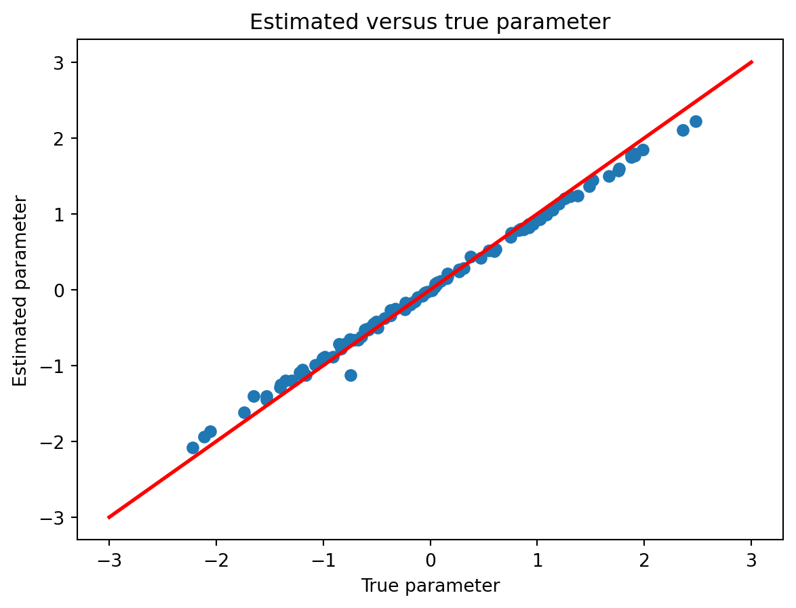

import jax.numpy as jnp
from jax import grad, jit, vmap
from jax import random
import optax
import matplotlib.pyplot as pltPremiers pas avec jax
Différentiation automatique avec Jax
Le but de cette vignette est d’implémenter une régression logistique et/ou une régression multivariée avec JAX.
Préliminaires
Installation
Conda
Jax est disponible dans le channel conda-forge et peut donc s’installer dans un environnement conda
#| eval: true
conda create -n jax
conda activate jax
## Install the CPU version
conda install jax -c conda-forge
## Install packages necessary for the render
conda install nbclient nbformat ipykernelPour des instruction détaillées pour l’installation en mode GPU ou TPU, se référer à la documentation officielle.
Il suffit alors d’activer l’environnement jax pour produire le html à partir du qmd
#| eval: false
conda activate jax
quarto render my_document.qmd --to htmlPip
Si vous préférez une installation via pip (pour une version cpu),
#| eval: false
pip3 install jax jaxlibPour une installation GPU (avec cuda 12 par exemple, on vous laisse gérer la compatibilité de vos driver Nvidia and Cie),
#| eval: false
pip install --upgrade "jax[cuda12_pip]" -f https://storage.googleapis.com/jax-releases/jax_cuda_releases.htmlL’utilisation de venv est recommandable (mais non obligatoire).
On installe également optax pour avoir accès à des optimiseurs.
#| eval: false
pip3 install optaxImportant Pour utiliser optax, il vaut mieux utiliser pip pour installer jax et jaxlib, les versions disponibles dans les dépôts conda sont en effet trop anciennes pour optax.
Premiers pas
Philosophie
En quelques mots, JAX est une bibliothèque Python développé par Google et itinitalement utilisé dans TensorFLow. Elle permet de faire de l’algèbre linéaire à la numpy, avec 2 propriétés clés le rendant extrêment performant:
- un autograd permettant la différention automatique de calcul Python/Numpy
- un compileur pour GPU et autres (XLA), dédié à l’algèbre linéaire qui permet d’optimiser les temps d’exécution grace à une approche JIT (Just-in Time, c’est-à-dire une optimisation du code à l’exécution et non pas avant l’appel comme avec un compileur classique).
L’objectif de la bibliothèque est de proposer une expérience utilisateur aussi proche que possible de calculs à la Numpy, notamment à l’aide de décorateurs Python. Néanmoins, pour accéder pleinement aux capacités de JAX, un certains nombres de contraintes d’écriture des programmes s’appliquent, que nous allons essayer de présenter pas à pas.
Import de la bibliothèque
L’import complet/standard est le suivant:
On peut détailler les fonctionnalité des modules comme suit:
- le module
jax.numpy, akajnp, porte les opérations matricielles usuelles de manière quasi transparente - le module
randomdéfinit les outils de génération de nombres aléatoires, propres à JAX et très différents de Numpy - le module
gradgère l’autodifférentiation - le module
jitgère la “just-in time” compilation (accélartion du code) - le module
vmappermet de vectoriser automatiquement certaines opérations
Jax.numpy: interface Algèbre linéaire haut-niveau
On commence par simuler des données aléatoires via les outils de jax. Attention la gestion de la clé aléatoire est explicite. Après avoir créé une clé et avant chaque appel à une fonction aléatoire, il faut faire évoluer la graine à la main
key,subkey = random.split(key, 2)et utiliser subkey (les sous-clés) dans l’appel à la fonction aléatoire (ou aux fonctions aléatoire) comme écrit ci-dessous.
n = 10000
p = 100
key = random.PRNGKey(0)
key,sub1,sub2 = random.split(key, 3)
ones = jnp.ones((n, 1))
x = random.normal(sub1, (n, p-1))
x = jnp.concatenate([ones, x], axis = 1)
beta_true = random.normal(sub2, (p,1))No GPU/TPU found, falling back to CPU. (Set TF_CPP_MIN_LOG_LEVEL=0 and rerun for more info.)Avant de les multiplier. On utilise ici la fonction block_until_ready() uniquement pour mesurer le temps effectif de calcul. En effet, JAX fait de l’évaluation asynchrone (comme {future} en R) pour rendre la main à l’utilisateur après l’envoi de la commande.
%timeit odds = jnp.dot(x, beta_true).block_until_ready() # runs on the CPU198 µs ± 1.72 µs per loop (mean ± std. dev. of 7 runs, 1,000 loops each)On échantillonne ensuite des variables suivant une loi de Bernoulli.
odds = jnp.dot(x, beta_true)
key,subkey = random.split(key, 2)
y = random.bernoulli(subkey, odds)et une perte logistique
\[\ell(y, x, \theta) = -\log p(y; \sigma(x^{\top}\theta)) = -y (x^\top \theta) + \log(1 + e^{x^\top \theta})\]
def logistic_loss(y, x, theta):
odds = jnp.dot(x, theta)
return -jnp.vdot(y, odds) + jnp.sum(jnp.log(1.0 + jnp.exp(odds)))Qu’on peut tester sur un example simple
## Should be log(2)
logistic_loss(True, 1.0, 0)Array(0.6931472, dtype=float32)Just-in-time compilation
La version normale de notre fonction logistique est déjà rapide.
%timeit logistic_loss(y, x, beta_true).block_until_ready()311 µs ± 1.09 µs per loop (mean ± std. dev. of 7 runs, 1,000 loops each)mais on peut l’accélerer en compilant la fonction via le décorateur @jit ou la fonction jit() de façon complètement transparente pour l’utilisateur.
## Utilisation du décorateur @jit
@jit
def logistic_loss(y, x, theta):
odds = jnp.dot(x, theta)
return -jnp.vdot(y, odds) + jnp.sum(jnp.log(1.0 + jnp.exp(odds)))## Utilisation de jit()
logistic_loss_jit = jit(logistic_loss)
%timeit logistic_loss_jit(y, x, beta_true).block_until_ready()269 µs ± 2.38 µs per loop (mean ± std. dev. of 7 runs, 1,000 loops each)La différence n’est pas très importante dans cet exemple. jit() permet des gains d’autant plus importants qu’on travaille sur des fonctions complexes.
Attention, il n’est pas toujours possible de jitter une fonction, en particulier, si cette fonction implique un branchement conditionnel:
def f(x):
if x > 5:
return x
else:
return 2*xL’erreur provient du fait que la définition de la fonction dépend de la valeur des entrées.
f_jit = jit(f)
## Renvoie une erreur
f_jit(1)TracerBoolConversionError: Attempted boolean conversion of traced array with shape bool[]..
The error occurred while tracing the function f at /tmp/ipykernel_6079/2514275982.py:1 for jit. This concrete value was not available in Python because it depends on the value of the argument x.
See https://jax.readthedocs.io/en/latest/errors.html#jax.errors.TracerBoolConversionErrorComme l’indique le message d’erreur
This concrete value was not available in Python because it depends on the value of the argument x.grad: auto-différentiation
JAX permet de calculer le gradient d’une fonction via grad(). La syntaxe est différente de torch et plus proche de ce qu’on ferait dans une fonction mathématique.
def loss(theta):
return logistic_loss(y, x, theta)## random start for theta
key,subkey = random.split(key, 2)
theta = random.normal(key, (p, 1))
grad_loss = grad(loss)grad_loss = grad(loss)
%timeit grad_loss(theta)10.3 ms ± 388 µs per loop (mean ± std. dev. of 7 runs, 1 loop each)grad() peut-être combiné à jit() dans tous les sens à condition que les fonctions s’y prêtent.
grad_loss = jit(grad(loss))
## Warmup to cache grad loss
grad_loss(theta).shape
## Actual time recording
%timeit grad_loss(theta)378 µs ± 16.5 µs per loop (mean ± std. dev. of 7 runs, 1,000 loops each)Mais ce n’est pas toujours intéressant.
grad_loss = jit(grad(jit(loss)))
## Warmup to cache grad loss
grad_loss(theta).shape
## Actual time recording
%timeit grad_loss(theta)370 µs ± 24.1 µs per loop (mean ± std. dev. of 7 runs, 1,000 loops each)Vectorisation
JAX permet enfin de vectoriser automatiquement des opérations de façon efficace (en faisant descendre la boucle à l’intérieur de la fonction, au niveau des primitives utilisées pour le calcul).
Considérons un example simple où on veut calculer des logs-odds sur mesures répétées.
## Matrice de covariables, répétées en temps
## [temps, individu, variable]
key,subkey = random.split(key, 2)
X = random.normal(key, (10, n, p))
def compute_odds(x, theta):
return jnp.dot(x, theta)
def compute_odds_batched(X, theta):
return jnp.stack([compute_odds(x, theta) for x in X]) Et testons ce qui se passe. On appelle la fonction sur une tranche de X
%timeit compute_odds(X[:1,:, :], beta_true)3.46 ms ± 110 µs per loop (mean ± std. dev. of 7 runs, 100 loops each)Puis sur toutes les tranches de X avec notre fonction vectorisée manuellement.
%timeit compute_odds_batched(X, beta_true)15.8 ms ± 487 µs per loop (mean ± std. dev. of 7 runs, 100 loops each)Puis sur toutes les tranches de X avec notre fonction vectorisée via vmap().
def compute_odds_batched_vmap(X, theta):
def f(x):
return compute_odds(x, theta)
return vmap(f)(X)compute_odds_batched_vmap(X, beta_true).shape(10, 10000, 1)%timeit compute_odds_batched_vmap(X, beta_true)13.7 ms ± 100 µs per loop (mean ± std. dev. of 7 runs, 100 loops each)À comparer à la version native jax qui est déjà nativement vectorisée pour cette opération
%timeit compute_odds(X, beta_true)12.5 ms ± 78 µs per loop (mean ± std. dev. of 7 runs, 100 loops each)Le gain n’est pas très important dans cette example précis mais on se rapproche quand même de la performance de la version native, par rapport à notre vectorisation manuelle.
Optimisation de la fonction objective
À la main
Contrairement à torch, on n’a pas d’optimiseur défini clé en main dans JAX. La dérivée est néanmoins une fonction comme les autres et on peut donc écrire très simplement un algorithme simple de descente de gradient.
%%time
num_iterations = 50
loss_vector = []
## Learning rate
lr = 0.001
## Initialisation de theta
theta = jnp.zeros(p)
## Fonction de perte, en mode jit
@jit
def loss(theta):
return logistic_loss(y, x, theta)
## Gradient de la fonction de perte, en mode jit
grad_loss = jit(grad(loss))
## Descente de gradient
for i in range(num_iterations):
# Suivi de la fonction de perte
loss_vector.append(loss(theta))
# Mise à jour du paramètre
theta = theta - lr * grad_loss(theta) CPU times: user 326 ms, sys: 23.4 ms, total: 350 ms
Wall time: 349 msEt on peut vérifier que la fonction de perte décroit au cours du temps.
plt.plot(range(1, num_iterations + 1), loss_vector)
plt.xlabel('Iterations')
plt.ylabel('Loss')
plt.title('Loss vs. Iterations')
plt.show()Et que les paramètres de régression estimés se rapprochent des vraies valeurs
plt.plot(beta_true, theta, marker='o', linestyle="none")
plt.plot([-3, 3], [-3, 3], color='r', linestyle='-', linewidth=2)
plt.xlabel('True parameter')
plt.ylabel('Estimated parameter')
plt.title('Estimated versus true parameter')
plt.show()
Avec Optax
On peut néanmoins utiliser la librairie optax pour définir des optimiseurs comme en torch. On va utiliser ici Adam.
Fonction objective
On commence par définir la fonction objective avec un ordre précis pour les arguments:
- paramètres à optimiser (typiquement \(\theta\), les coefficients de régression)
- paramètres additionels (pénalités, etc)
- données (avec le mot clé
data)
def logistic_loss(y, x, theta):
odds = jnp.dot(x, theta)
return -jnp.vdot(y, odds) + jnp.sum(jnp.log(1.0 + jnp.exp(odds)))
def objective_and_grad(params, penalty, data):
x = data[:, :-1]
y = data[:, -1]
def loss(params):
return logistic_loss(y, x, params)
loss_value = loss(params)
loss_grad = grad(loss)(params)
return [loss_value, loss_grad]Itérateur de données
Adam est un algorithme d’optimisation stochastique. On définit donc un itérateur qui va échantillonner les données.
batch_size = 100
n_iter = 1000
# key, subkey = random.split(key, 2)
def data_iterator(key, data):
return random.choice(key, data, (batch_size, ), replace = False)Optimisation
On définit enfin une fonction de fit qui travaille sur des batchs.
def fit(data, params, optimizer, key):
opt_state = optimizer.init(params)
loss_vector = []
@jit
def step(params, opt_state, batch):
loss_value, grads = objective_and_grad(params, 0, batch)
updates, opt_state = optimizer.update(grads, opt_state, params)
params = optax.apply_updates(params, updates)
return params, opt_state, loss_value
for i in range(n_iter):
key, subkey = random.split(key, 2)
batch = data_iterator(subkey, data)
params, opt_state, loss_value = step(params, opt_state, batch)
loss_vector.append(loss_value.item())
if i % 100 == 0:
print(f'step {i}, loss: {loss_value}')
return [params, loss_vector]Finally, we can fit our parametrized function using the Adam optimizer provided by optax.
%%time
initial_params = jnp.zeros((x.shape[1], ))
optimizer = optax.adam(learning_rate=1e-2)
data = jnp.concatenate([x, y], axis = 1)
params,loss_vector = fit(data, initial_params, optimizer, key)step 0, loss: 69.3147201538086
step 100, loss: 18.580368041992188
step 200, loss: 12.382568359375
step 300, loss: 11.707901000976562
step 400, loss: 8.840866088867188
step 500, loss: 10.6444091796875
step 600, loss: 8.130218505859375
step 700, loss: 8.6331787109375
step 800, loss: 8.014801025390625
step 900, loss: 5.246734619140625
CPU times: user 10.7 s, sys: 239 ms, total: 10.9 s
Wall time: 10.3 sOn peut vérifier que la fonction objective converge sans décroître systématiquement
plt.plot(range(1, n_iter+1), loss_vector)
plt.xlabel('Iterations')
plt.ylabel('Loss')
plt.title('Loss vs. Iterations')
plt.show()et que les paramètres sont proches des bonnes valeurs
plt.plot(beta_true, params, marker='o', linestyle="none")
plt.plot([-3, 3], [-3, 3], color='r', linestyle='-', linewidth=2)
plt.xlabel('True parameter')
plt.ylabel('Estimated parameter')
plt.title('Estimated versus true parameter')
plt.show()